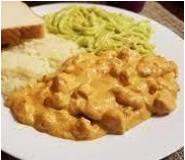

Pechuga de pollo
Ingedientes:
- Pechuga de pollo
- Crema
- Consomé de pollo
- 1/4 de queso crema
- Chile chipotle
- Elote
Preparación:
Se corta en cuadritos la pechuga de pollo, y se sazona con sal, pimienta, paprika, y ajo en polvo, después se pone en un sartén con poquito aceite para que se cocine. Mientras se cocina licúa la crema, el consomé, y el chile chipotle (a este se le retiran las semillas), y se agrega al vaso de la licuadora, posteriormente se vacía la mezcla al sartén con la pechuga de pollo, y ya que se haya integrado todo, se le agrega el elote.